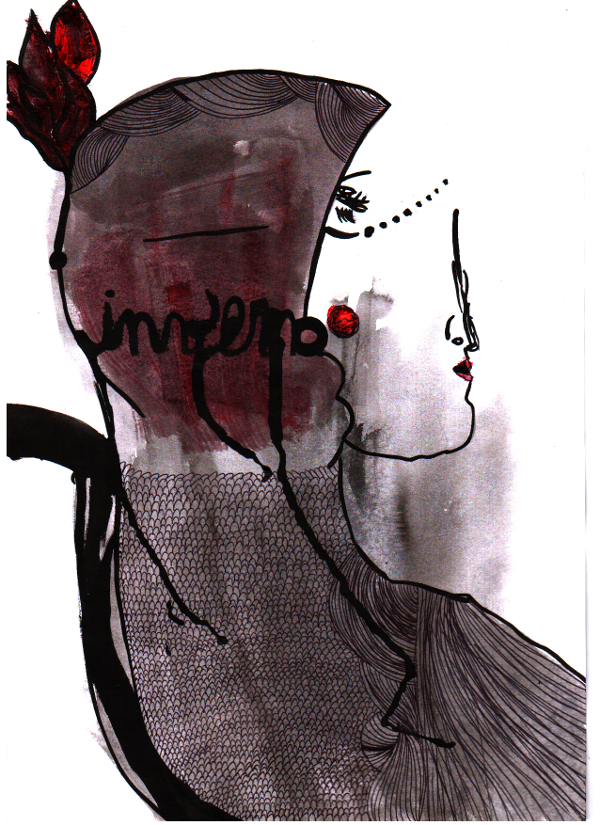

Leia ao som de "The Thrill Is Gone"
Estações abrem e fecham ciclos. Inverno, particularmente, traz a tona uma série de lembranças guardadas no passado e , as vezes, mal resolvidas. Traz a sensação de que voltamos no tempo: novamente o tom de cinza borrando o céu, novamente a dúvida entre ir ou ficar, mais uma vez a vontade de algo que aqueça o corpo.

Uma boa oportunidade para esvaziar as gavetas e se enfiar nelas, já que o inverno estagna os sentimentos e até o funcionamento do corpo. Eis que Pozimi retorna com intuito de nos lembrar o que estávamos fazendo no inverno passado e o que queremos desse. Vou ali me enfiar em uma gaveta e já volto.
Pozimi foi inspirada nos cartazes do art nouveau, entretanto mescla traços de urbanidade e pontua em seu rosto a introspecção, a quietude e sobriedade da solidão, ao contrário das musas nouveau que são resplandescentes e quase mesmo solares nos cartazes desenvolvidos na década de 20.
Pozimi foi inspirada nos cartazes do art nouveau, entretanto mescla traços de urbanidade e pontua em seu rosto a introspecção, a quietude e sobriedade da solidão, ao contrário das musas nouveau que são resplandescentes e quase mesmo solares nos cartazes desenvolvidos na década de 20.
por Sília Moan